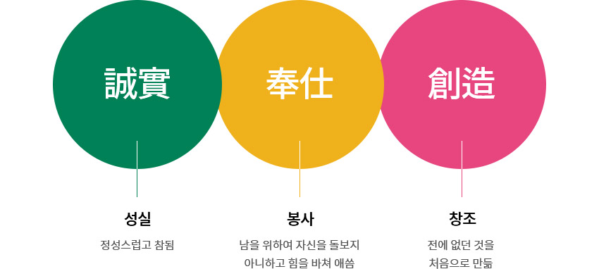
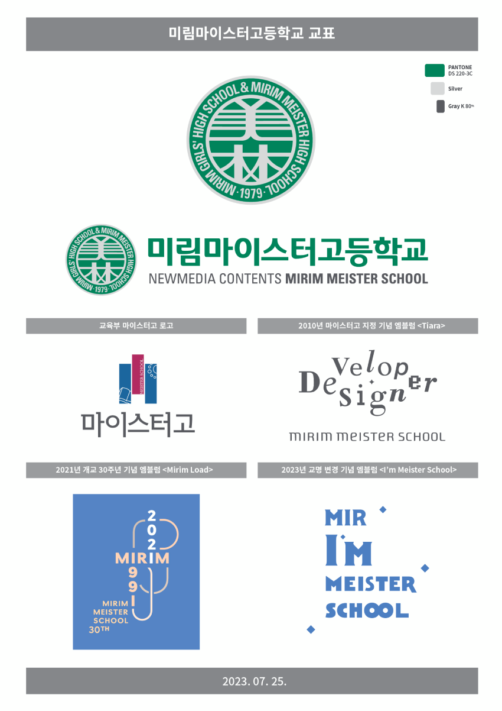

1991년 우리나라 최초의 전산고등학교를 개교하게 되었습니다.
안녕하십니까?
사회로 부터 얻은 것을 사회에 환원하여 국가 발전에 이바지 하겠다는 일념으로 1979년도에 미림중학교, 미림여자고등학교를 설립하여 유지 경영해 오던 중 첨단 산업 사회를 이끌어나갈 전산 전문 인력이 크게 모자람을 감안하여 1991년 우리나라 최초의 전산고등학교를 설립, 개교하게 되었습니다.
무한 경쟁의 시대를 맞은 세계 속에서 국가 경쟁력을 강화 할 수 있는 것은 지식과 기술을 바탕으로 하는 첨단 과학 기술 교육에 있다는 생각 아래 먼저 실력있는 선생님을 모시고 쾌적한 교육환경, 첨단의 뉴미디어 실습실을 구축하였습니다.
본학원에 대한 격려와 성원을 보내주시는 모든 분들께 보답하는 뜻에서 본교의 교육활동에 필요한 모든 지원을 아끼지 않겠습니다.
설립자•이사장
김기병
우리나라 직업교육의 선도모델로서 IT 분야의 기술명장을 육성하겠습니다.
안녕하십니까?
미림마이스터고는 뉴미디어콘텐츠 분야의 마이스터고등학교로서 대한민국의 IT기술명장을 육성하는 명문사학입니다.
우리 학교는 “미래사회의 핵심역량을 갖춘 창의·융합적인 인재육성” 이라는 비젼 아래 실력 있는 IT분야의 영마이스터 양성을 위해 기업맞춤형 교육과정뿐만 아니라 다양한 창의적 글로벌 기술인재 양성 프로그램을 운영하고 있습니다. 이러한 명품교육을 바탕으로 본교는 대한민국 직업교육의 리더로서 확고하게 자리매김을 하고 있습니다.
앞으로도 우리는 지식과 정보, 정보와 기술의 융합이 강조될 4차 산업혁명시대의 능력중심사회를 이끌어나가는 명문마이스터고등학교로서의 자부심을 갖고 국가와 사회에 공헌할 수 있는 IT 분야의 스마트 인재 양성을 위해 혼신의 노력을 다하겠습니다.
학교장
김현수
건학정신
교포
교육목표
성실히 배우고 일하며, 나보다 우리를 위하여 봉사하고 협동하며 새 역사 창조에 기여할 수 있는,
능력있는 여성 정보산업 인력을 기른다.
비전과
핵심가치